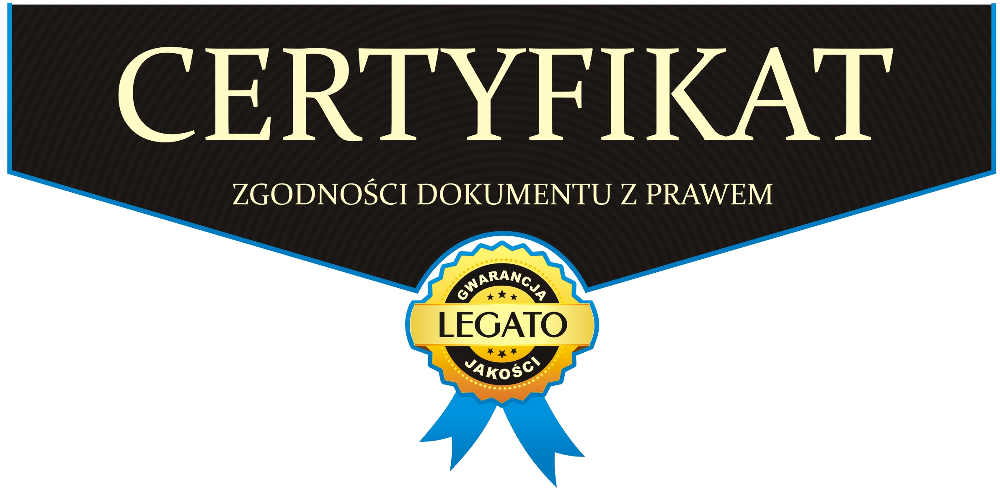

POLITYKA PRYWATNOŚCI PLATFORMY SAVYRR
§1 Postanowienia ogólne
Ten dokument stanowi załącznik do Regulaminu. Korzystając z naszych usług, powierzasz nam swoje informacje. Niniejsza Polityka prywatności służy jedynie jako pomoc w zrozumieniu, jakie informacje i dane są zbierane i w jakim celu je wykorzystujemy. Te dane są bardzo dla nas ważne, dlatego prosimy o dokładne zapoznanie się z tym dokumentem gdyż określa on zasady oraz sposoby przetwarzania i ochrony danych osobowych. Dokument ten określa także zasady stosowania plików „Cookies”.
Niniejszym oświadczamy, że przestrzegamy zasad ochrony danych osobowych oraz wszelkich uregulowań prawnych, które są przewidziane Ustawą o ochronie danych osobowych oraz Rozporządzeniem Parlamentu Europejskiego i Rady (UE) 2016/679 z dnia 27 kwietnia 2016 r. w sprawie ochrony osób fizycznych w związku z przetwarzaniem danych osobowych i w sprawie swobodnego przepływu takich danych oraz uchylenia dyrektywy 95/46/WE.
Osoba której dane osobowe są przetwarzane ma prawo zwrócić się do nas celem uzyskania wyczerpujących informacji w jaki sposób wykorzystujemy jego dane osobowe. Zawsze w jasny sposób staramy się poinformować o danych, które gromadzimy, w jaki sposób je wykorzystujemy, jakim celom mają służyć i komu je przekazujemy, jaką zapewniamy ochronę tych danych przy przekazaniu innym podmiotom oraz udzielamy informacji o instytucjach z którymi należy się skontaktować w razie wątpliwości.
Platforma stosuje środki techniczne takie jak: środki ochrony fizycznej danych osobowych, środki sprzętowe infrastruktury informatycznej i telekomunikacyjnej, środki ochrony w ramach narzędzi programowych i baz danych oraz środki organizacyjne zapewniające należytą ochronę przetwarzanych danych osobowych, a w szczególności zabezpieczają dane osobowe przed udostępnieniem ich nieupoważnionym osobom trzecim, uzyskaniem przez osobę nieupoważnioną i wykorzystaniem ich w niewiadomym celu, a także przypadkową lub celową zmianą, utratą, uszkodzeniem lub zniszczeniem takich danych. Obejmuje to m.in. ochronę komunikacji, kontrolę dostępu, ograniczanie nadużyć, walidację działań użytkowników, mechanizmy zgłoszeń oraz moderację. Logi techniczne związane z bezpieczeństwem i diagnostyką mogą być przechowywane przez ograniczony okres, obecnie do około 90 dni.
Na zasadach określonych w Regulaminie oraz w niniejszym dokumencie posiadamy wyłączny dostęp do danych. Dostęp do danych osobowych może być również powierzony innym podmiotom za pomocą których dokonuje się płatności, które gromadzą, przetwarzają i przechowują dane osobowe zgodnie ze swoimi Regulaminami oraz podmioty, które mają za zadanie realizację zamówienia. Dostęp do danych osobowych jest udzielany w/w podmiotom w zakresie niezbędnym i tylko takim, który zapewni realizację usług.
Dane osobowe są przetwarzane tylko w takich celach na jakie wyrazili Państwo zgodę poprzez kliknięcia w odpowiednie pola formularza zamieszczonego Platformie lub w inny wyraźny sposób. Podstawą prawną przetwarzania Państwa danych osobowych jest zgoda na przetwarzanie danych lub wymóg realizacji usługi (np. zamówienie produktu czy usługi, stosownie do artykułu 6 ust. 1 lit a i b Rozporządzenia Parlamentu Europejskiego i Rady (UE) 2016/679 z dnia 27 kwietnia 2016 r. w sprawie ochrony osób fizycznych w związku z przetwarzaniem danych osobowych i w sprawie swobodnego przepływu takich danych oraz uchylenia dyrektywy 95/46/WE (ogólne rozporządzenie o ochronie danych) - RODO.
§2 Zasady prywatności
Poważnie traktujemy prywatność. Charakteryzuje nas szacunek dla prywatności oraz możliwie najpełniejsza i zagwarantowana wygoda z korzystania z naszego usług.
Cenimy zaufanie, jakim obdarzają nas Użytkownicy, powierzając nam swoje dane osobowe w celu realizacji zamówienia. Zawsze korzystamy z danych osobowych w sposób uczciwy oraz tak, aby nie zawieść tego zaufania, tylko w zakresie niezbędnym do realizacji zamówienia w tym jego przetwarzania.
Użytkownik ma prawo do uzyskania jasnych i pełnych informacji o tym, w jaki sposób wykorzystujemy jego dane osobowe i do jakich celów są potrzebne. Zawsze w jasny sposób informujemy o danych, które gromadzimy, w jaki sposób i komu je przekazujemy oraz udzielamy informacji o podmiotach, z którymi należy się skontaktować w razie wątpliwości, pytań, uwag.
W razie wątpliwości odnośnie wykorzystywania przez nas danych osobowych Użytkownika, niezwłocznie podejmiemy działania w celu wyjaśnienia takich wątpliwości, w sposób pełny i wyczerpujący odpowiadamy na wszystkie pytania z tym związane.
Podejmiemy wszystkie uzasadnione działania, aby chronić dane Użytkowników przed nienależytym i niekontrolowanym wykorzystaniem oraz zabezpieczyć je w sposób kompleksowy.
Administratorem danych osobowych jest Kamil Sąder, ul. Walerego Sławka 9/84, 30-633 Kraków, adres e-mail: saderkamil@gmail.com, tel.: +48 889 182 736 (osoba fizyczna nieprowadząca działalności gospodarczej; w razie rozpoczęcia działalności gospodarczej Administrator zaktualizuje powyższe dane oraz uzupełni numer NIP/REGON, a niniejszy zapis będzie podlegał odpowiedniej aktualizacji).
Podstawą prawną przetwarzania Państwa danych osobowych jest art. 6 ust. 1 lit. b) RODO. Podanie danych nie jest obowiązkowe, ale niezbędne do podjęcia odpowiednich czynności poprzedzających zawarcie umowy oraz jej realizację. Będziemy przekazywać Państwa dane osobowe innym odbiorcom, którym powierzono przetwarzanie danych osobowych w imieniu i na naszą rzecz. Państwa dane będą przekazywane na podstawie art. 6 ust. 1 lit. f) RODO, gdzie prawnie uzasadnionym interesem jest należyte wykonanie umów/zleceń. Ponadto będziemy udostępniać Państwa dane osobowe innym partnerom handlowym. Zebrane dane osobowe przechowujemy na terenie Europejskiego Obszaru Gospodarczego („EOG”), ale mogą one być także przesyłane do kraju spoza tego obszaru i tam przetwarzane. Każda operacja przesyłania danych osobowych jest wykonywana zgodnie z obowiązującym prawem. Jeśli dane są przekazywane poza obszar EOG, stosujemy standardowe klauzule umowne oraz tarczę prywatności jako środki zabezpieczające w odniesieniu do krajów, w przypadku których Komisja Europejska nie stwierdziła odpowiedniego poziomu ochrony danych.
Państwa dane osobowe związane z zawarciem i realizacją umowy o świadczenie usług przetwarzane będą przez okres ich realizacji, a po jej zakończeniu nie dłużej niż wymagają tego obowiązujące przepisy prawa, w tym przepisy Kodeksu cywilnego oraz ustawy o rachunkowości – tj. co do zasady do 10 lat, licząc od końca roku kalendarzowego, w którym ostatnia umowa została wykonana (na potrzeby ewentualnych roszczeń, obowiązków podatkowych i rachunkowych). Dane konta użytkownika (profil, zdjęcia, treści, dane logowania) są przechowywane przez okres aktywności konta i podlegają mechanizmowi automatycznego usuwania: po 12 miesiącach braku aktywności użytkownik otrzymuje ostrzeżenie, a po 18 miesiącach braku aktywności konto wraz z powiązanymi danymi jest trwale usuwane. Dłuższe okresy retencji (do 10 lat) odnoszą się wyłącznie do tych kategorii danych, dla których obowiązek przechowywania wynika z przepisów (np. dokumentacja księgowa, dane niezbędne do obrony przed roszczeniami).
Państwa dane osobowe przetwarzane w celu zawarcia i wykonania przyszłych umów będą przetwarzane do czasu zgłoszenia sprzeciwu.
Przysługuje Państwu prawo do: dostępu do swoich danych osobowych i otrzymania kopii danych osobowych podlegających przetwarzaniu, sprostowania swoich nieprawidłowych danych; żądania usunięcia danych (prawo do bycia zapomnianym) w przypadku wystąpienia okoliczności przewidzianych w art. 17 RODO; żądania ograniczenia przetwarzania danych w przypadkach wskazanych w art. 18 RODO, wniesienia sprzeciwu wobec przetwarzania danych w przypadkach wskazanych w art. 21 RODO, przenoszenia dostarczonych danych, przetwarzanych w sposób zautomatyzowany.
Jeżeli uważacie Państwo, że dane osobowe są przetwarzane niezgodnie z prawem, możecie wnieść skargę do organu nadzorczego (Urząd Ochrony Danych Osobowych, ul. Stawki 2, Warszawa). Jeśli potrzebujecie Państwo dodatkowych informacji związanych z ochroną danych osobowych lub chcecie skorzystać z przysługujących praw, skontaktujcie się z nami listownie na adres korespondencyjny.
Dokładamy wszelkich starań, aby chronić przed nieuprawnionym dostępem, nieautoryzowaną modyfikacją, ujawnieniem oraz zniszczeniem informacji znajdujących się w naszym posiadaniu. W szczególności:
Kontrolujemy metody gromadzenia, przechowywania i przetwarzania informacji, w tym fizyczne środki bezpieczeństwa, aby chronić przed nieuprawnionym dostępem do systemu.
Dostępu do danych osobowych udzielamy jedynie tym pracownikom, kontrahentom oraz przedstawicielom, którzy muszą mieć do nich dostęp. Ponadto na mocy umowy są oni zobowiązani do zachowania ścisłej poufności, do umożliwienia nam kontroli i sprawdzenia jak wywiązują się z powierzonych obowiązków, a w przypadku niewypełnienia tych zobowiązań mogą ponieść konsekwencje.
Będziemy przestrzegać wszystkich obowiązujących przepisów i regulacji dotyczących ochrony danych i będziemy współpracować z organami zajmującymi się ochroną danych oraz uprawnionymi do tego organami ścigania. W przypadku braku przepisów dotyczących ochrony danych, będziemy postępować zgodnie z ogólnie przyjętymi zasadami ochrony danych, zasadami współżycia społecznego jak i ustalonymi zwyczajami.
Dokładny sposób ochrony danych osobowych został zawarty w polityce ochrony danych osobowych (ODO: polityka bezpieczeństwa, regulamin ochrony danych osobowych, instrukcja zarządzania systemem informatycznym) Z przyczyn bezpieczeństwa, ze względu na opisane w niej procedury, jest ona do wglądu jedynie dla organów kontroli państwowej.
W razie pytań, odnośnie sposobu, w jaki postępowania z danymi osobowymi, zapraszamy do kontaktu za pomocą strony, z której użytkownik został przekierowany do niniejszej Polityki prywatności. Prośba o kontakt zostanie niezwłocznie przekazana do odpowiedniej powołanej do tego osoby.
Użytkownik ma zawsze prawo powiadomić nas, jeśli:
nie chce w jakiejkolwiek formie już otrzymywać od nas informacji lub wiadomości;
pragnie otrzymać posiadaną przez nas kopię swoich danych osobowych;
poprawić, zaktualizować lub usunąć swoje dane osobowe znajdujące się w naszej ewidencji;
pragnie zgłosić naruszenia, nienależyte wykorzystanie bądź przetwarzanie swoich danych osobowych.
Aby ułatwić nam odpowiedź bądź ustosunkowanie się do podanych informacji, prosimy o podanie imienia i nazwiska oraz dalej idących szczegółów.
§3 Zakres i cel zbierania danych osobowych
Przetwarzamy niezbędne dane osobowe w celu realizacji usług oraz w celach księgowych i tylko takich tj. :
w celu zawarcia umowy, świadczenia usług reklamacji oraz odstąpienia od umowy,
monitorowanie ruchu w aplikacji oraz na ewentualnej stronie internetowej Usługodawcy;
zbieranie anonimowych statystyk dotyczących sposobu korzystania z aplikacji;
ustalanie liczby anonimowych użytkowników korzystających z aplikacji;
kontrolowanie, jak często prezentowane są użytkownikom poszczególne treści (profile, oferty wydarzeń);
kontrolowanie, jak często użytkownicy korzystają z poszczególnych funkcjonalności aplikacji oraz inicjują kontakt;
umożliwienie kontaktu z Administratorem (m.in. wiadomości transakcyjne wysyłane przez Resend);
wykorzystanie systemu dopasowań (matchmaking) oraz prezentacji ofert powiązanych z wydarzeniami;
wykorzystanie wewnętrznego systemu komunikacji pomiędzy użytkownikami (czat) oraz wysyłki transakcyjnych wiadomości e-mail (potwierdzenia, powiadomienia, ostrzeżenia o nieaktywności konta);
integracja z zewnętrznymi dostawcami tożsamości: Sign in with Google (Google LLC) oraz Sign in with Apple (Apple Inc.) – wyłącznie w zakresie umożliwienia rejestracji i uwierzytelnienia użytkownika;
obsługa ewentualnych przyszłych płatności wewnątrz aplikacji za funkcje dodatkowe (np. „Boost”, „Oferta Premium”) – rozliczanych za pośrednictwem App Store (Apple Inc.) lub Google Play (Google LLC) zgodnie z regulaminami tych dostawców; obecnie funkcje te są nieodpłatne.
Zbieramy, przetwarzamy i przechowujemy następujące dane użytkowników:
adres poczty elektronicznej (e-mail),
identyfikatory logowania zewnętrznego: Apple ID oraz Google ID – w zakresie niezbędnym do uwierzytelnienia użytkownika (otrzymywany jest unikalny identyfikator dostawcy oraz – jeśli użytkownik wyrazi zgodę po stronie dostawcy – adres e-mail);
numer telefonu (komórkowy, stacjonarny),
datę urodzenia,
informacje o używanej przeglądarce internetowej,
dane profilowe podawane przez użytkownika, takie jak imię, wiek, płeć, wzrost, opis profilu, zainteresowania oraz informacje dotyczące stylu życia, w tym deklaracje dotyczące palenia lub spożywania alkoholu.
informacje dotyczące preferencji użytkownika w zakresie dopasowań.
lokalizacyjne wykorzystywane do działania funkcji dopasowań.
zdjęcia profilowe i inne treści publikowane przez użytkownika.
dane komunikacyjne związane z wiadomościami i interakcjami pomiędzy użytkownikami.
opinie i recenzje po wydarzeniach.
dane techniczne i bezpieczeństwa niezbędne do utrzymania działania usługi.
tokeny powiadomień push (Expo Push Token / APNs / FCM) oraz identyfikatory urządzeń niezbędne do dostarczania powiadomień;
inne dobrowolnie przekazane nam dane osobowe.
Podanie powyższych danych przez jest całkowicie dobrowolne ale także i niezbędne do pełnej realizacji usług.
Cel gromadzenia i przetwarzania lub wykorzystania przez nas danych:
obecnie Administrator nie prowadzi działań marketingu bezpośredniego ani kampanii reklamowych w aplikacji; w przypadku ich uruchomienia w przyszłości użytkownik zostanie o tym poinformowany, a niniejsza Polityka zostanie zaktualizowana;
realizacja obowiązków nałożonych przepisami prawa poprzez zbieranie informacji o niepożądanych działaniach;
Możemy przesyłać dane osobowe do serwerów znajdujących się poza krajem zamieszkania użytkownika lub do podmiotów powiązanych, stron trzecich z siedzibą w innych krajach w tym krajach z obszaru EOG (Europejski Obszar Gospodarczy, EOG ang. European Economic Area, EEA – strefa wolnego handlu i Wspólny Rynek, obejmujące państwa Unii Europejskiej i Europejskiego Stowarzyszenia Wolnego Handlu EFTA) w celu przetwarzania danych osobowych przez takie podmioty w naszym imieniu zgodnie z postanowieniami niniejszej Polityki prywatności oraz obowiązującymi przepisami prawa, zwyczajami jak i regulacjami dotyczącymi ochrony danych.
Wykaz kategorii odbiorców danych (podmiotów przetwarzających), z których usług Administrator korzysta przy świadczeniu usług aplikacji:
Google LLC – usługa „Sign in with Google” (uwierzytelnianie użytkowników);
Apple Inc. – usługa „Sign in with Apple” (uwierzytelnianie użytkowników);
Expo (650 Industries, Inc.) – wysyłka powiadomień push (Expo Push Notifications) oraz dostarczanie aktualizacji aplikacji (Expo Updates);
Resend (Resend, Inc.) – wysyłka transakcyjnych wiadomości e-mail (np. powiadomienia, ostrzeżenia o nieaktywności konta);
dostawca usług object storage zgodny ze standardem S3 (m.in. Civo Ltd.) – przechowywanie zdjęć i innych treści użytkowników;
dostawca infrastruktury serwerowej oraz baz danych, w tym PostgreSQL, Redis i RabbitMQ – hosting backendu oraz przetwarzanie danych w trakcie świadczenia usług;
Apple Inc. / Google LLC – w zakresie ewentualnych przyszłych płatności realizowanych przez App Store / Google Play;
podmioty świadczące usługi prawne, księgowe i podatkowe na rzecz Administratora – w zakresie niezbędnym do obsługi rozliczeń i zobowiązań prawnych;
organy państwowe (sądy, organy ścigania, organy nadzorcze) – w zakresie i na podstawie obowiązujących przepisów prawa.
Z każdym z podmiotów przetwarzających, w zakresie wymaganym przez art. 28 RODO, Administrator zawiera lub zawrze przed rozpoczęciem powierzenia danych odpowiednią umowę powierzenia przetwarzania danych osobowych. Część dostawców (m.in. Google, Apple, Expo, Resend) ma siedzibę poza Europejskim Obszarem Gospodarczym; w takim przypadku przekazywanie danych odbywa się na podstawie standardowych klauzul umownych zatwierdzonych przez Komisję Europejską lub innych mechanizmów przewidzianych przez RODO.
Twoje dane osobowe przechowujemy nie dłużej niż są one potrzebne dla właściwej jakości obsługi i w zależności od trybu i celu ich pozyskania przechowujemy je na czas jej trwania oraz po jej zakończeniu w celach:
realizacji obowiązków wynikających z przepisów prawa, przepisów podatkowych i rachunkowych;
zapobiegania nadużyciom lub przestępstwom;
statystycznych i archiwizacyjnych.
Działania marketingowe – na czas trwania umowy, udzielenia odrębnej zgody na przetwarzanie takich danych – do czasu zakończenia działań związanych z obsługą transakcji, wniesienia przez Ciebie sprzeciwu wobec takiego przetwarzania lub wycofania zgody.
Działania okołosprzedażowe i promocyjne – np. konkursy, akcje promocyjne – na czas trwania i rozliczenia takich akcji.
Działalność operacyjna - do czasu przedawnienia obowiązków nałożonych przez Rozporządzenie RODO oraz odpowiednie przepisy krajowe, celem wykazania rzetelności w przetwarzaniu danych osobowych
dochodzenia Wszelkich roszczeń związanych ze zrealizowaną umową;
Mając na uwadze okoliczności, że w wielu krajach, do których są przesyłane niniejsze dane osobowe nie obowiązuje taki sam poziom ochrony prawnej danych osobowych, jaki obowiązuje w kraju użytkownika. Do danych osobowych użytkownika przechowywanych w innym kraju dostęp zgodnie z prawem tam obowiązującym, dostęp mogą uzyskać na przykład: sądy, organy odpowiedzialne za egzekwowanie prawa i bezpieczeństwo narodowe, zgodnie z przepisami obowiązującymi w tym kraju. Z zastrzeżeniem zgodnych z prawem próśb o ujawnienie danych, zobowiązujemy się wymagać od podmiotów przetwarzających dane osobowe poza krajem użytkownika podjęcia działań w celu ochrony danych w adekwatny sposób do regulacji ich prawa krajowego.
§4 Polityka „Cookies”
Uwaga: Usługa jest świadczona głównie w postaci aplikacji mobilnej. Aplikacja mobilna nie wykorzystuje plików „cookies” w klasycznym rozumieniu przeglądarkowym; w celach analogicznych (utrzymanie sesji, identyfikacja zalogowanego użytkownika, bezpieczeństwo) wykorzystywane są tokeny uwierzytelniające oraz identyfikatory techniczne urządzenia, przechowywane lokalnie w bezpiecznych magazynach systemu operacyjnego (Keychain w iOS / Keystore w Android). Poniższe postanowienia dotyczące plików „cookies” mają zastosowanie odpowiednio do tych mechanizmów oraz – w pełnym zakresie – do ewentualnej strony internetowej Usługodawcy.
Zbieramy w sposób automatyczny informacje zawarte w plikach cookies w celu gromadzenia danych Użytkownika. Plik Cookies to mały fragment tekstu, który jest wysyłany do przeglądarki Użytkownika i który przeglądarka wysyła z powrotem przy następnych wejściach na witrynę. Używane są głównie do utrzymywania sesji np. poprzez wygenerowanie i odesłanie tymczasowego identyfikatora po logowaniu. Wykorzystujemy pliki Cookies „sesyjne” przechowywane na urządzeniu końcowym Użytkownika do czasu jego wylogowania, wyłączenia strony internetowej lub wyłączenia przeglądarki internetowej oraz pliki Cookies „stałe” przechowywane na urządzeniu końcowym Użytkownika przez czas określony w parametrach plików Cookies lub do czasu ich usunięcia przez Użytkownika.
Pliki Cookies dostosowują i optymalizują stronę i jej ofertę dla potrzeb Użytkowników poprzez takie działania jak tworzenie statystyk odsłon oraz zapewnienie bezpieczeństwa. Pliki Cookies niezbędne są również do utrzymania sesji po opuszczeniu strony internetowej.
Administrator przetwarza dane zawarte w plikach Cookies za każdym razem gdy strona jest odwiedzana przez odwiedzających w następujących celach:
optymalizacji korzystania ze strony;
identyfikacji Usługobiorców jako w danej chwili zalogowanych;
przystosowania, grafiki, opcji wyboru oraz wszelkiej innej zawartości strony do indywidualnych preferencji Usługobiorcy;
zapamiętywania uzupełnianych w sposób automatyczny i manualny, zamieszczanych danych z Formularzy Zamówienia lub podanych przez odwiedzającego danych logowania;
gromadzenia i analizowania anonimowych statystyk przedstawiających sposób korzystania ze strony w panelu administracyjnym oraz google analytics
tworzenia list remarketingowych na podstawie informacji o preferencjach, zachowaniu, sposobie korzystania zainteresowaniach ze Strony oraz zbierania danych demograficznych, a następnie udostępnianie tych list w AdWords oraz Facebook Ads.
tworzenia segmentów danych na podstawie informacji demograficznych, zainteresowań, upodobań w wyborze oglądanych produktów/usług.
wykorzystywania danych demograficznych i danych o zainteresowaniach w raportach Analytics.
Użytkownik w każdej chwili za pomocą swojej przeglądarki internetowej może całkowicie zablokować i skasować gromadzenie plików Cookies.
Zablokowanie przez Użytkownika możliwości gromadzenia plików Cookies na jego urządzeniu może utrudnić lub uniemożliwić korzystanie z niektórych funkcjonalności strony do czego Użytkownik jest w pełni uprawniony ale musi w takiej sytuacji mieć świadomość z ograniczeń funkcjonalności.
Użytkownik, który nie chce wykorzystywania plików „cookies” w opisanym powyżej celu w każdej chwili może usunąć je ręcznie. Do zapoznania się ze szczegółową instrukcją postępowania należy odwiedzić stronę internetową producenta używanej przeglądarki internetowej z której aktualnie korzysta Użytkownik.
Więcej informacji na temat Cookies dostępnych jest w menu pomocy każdej przeglądarki internetowej. Przykładowe przeglądarki internetowe obsługujące wspomniane pliki „Cookies”:
Ustawienia plików cookies Internet Explorer
Ustawienia plików cookies Chrome
Ustawienia plików cookies Firefox
Ustawienia plików cookies Opera
Ustawienia plików cookies Safari
Pliki cookies w Android
Pliki cookies w Blackberry
Pliki cookies w iOS (Safari)
Pliki cookies w Windows Phone
§5 Prawa i obowiązki
Mamy prawo a w przypadkach prawem określonych także i ustawowy obowiązek do przekazania wybranych bądź wszystkich informacji dotyczących danych osobowych organom władzy publicznej bądź osobom trzecim, które zgłoszą takie żądanie udzielenia informacji na podstawie obowiązujących przepisów prawa polskiego.
Użytkownik ma prawo dostępu do treści swoich danych osobowych, które udostępnia, Użytkownik może te dane poprawiać, uzupełniać w każdym czasie, a także ma prawo do żądania aby je usunięto ze swoich baz danych bądź zaprzestano je przetwarzać, bez podawania jakiekolwiek przyczyny. W celu realizacji swoich praw Użytkownik może w każdym czasie przesłać stosowną wiadomość na adres poczty elektronicznej bądź w inny sposób, który dostarczy/przekaże takie żądanie.
Przetwarzanie danych osobowych osób fizycznych będących naszymi klientami opiera się na:
usprawiedliwionym interesie jako administratora danych (np. w zakresie tworzenia bazy danych, czynności analitycznych i profilujących, w tym czynności dot. analizy korzystania z produktów, marketingu bezpośredniego produktów własnych, zabezpieczeniu dokumentacji na potrzeby obrony przed ewentualnymi roszczeniami lub na potrzeby dochodzenia roszczeń),
zgody (w tym w szczególności zgody na e-mail marketing lub telemarketing),
wykonania zawartej umowy,
obowiązków wynikających z prawa (np. prawa podatkowego lub przepisów o rachunkowości).
Przetwarzanie danych osobowych osób fizycznych będących potencjalnymi klientami opiera się na:
usprawiedliwionym interesie administratora danych (np. w zakresie tworzenia bazy danych, marketingu bezpośrednim produktów własnych)
zgody (w tym w szczególności zgody na e-mail marketing lub telemarketing)
Żądanie ze strony Użytkownika usunięcia danych osobowych lub zaprzestania ich przetwarzania przez może skutkować całkowitym brakiem możliwości realizacji usług przez bądź ich poważnym ograniczeniem.
Szczególną wagę przykładamy do kwestii profilowania i wskazujemy, że:
na potrzeby profilowania przetwarzamy z reguły dane, które uprzednio podlegały szyfrowaniu ssl;
wykorzystujemy do tego dane podane przez użytkownika w profilu (m.in. wiek, płeć, lokalizację, preferencje partnera, zainteresowania, styl życia) oraz dane techniczne (identyfikator konta, identyfikator urządzenia, adres IP);
profilujemy w celu realizacji funkcji dopasowań (matchmaking) i filtrowania ofert/profili zgodnie z kryteriami zdefiniowanymi przez użytkownika (m.in. lokalizacja, preferencje partnera, rodzaj wydarzenia), a także w celu ustalania rankingu prezentowanych ofert i wykorzystania funkcji typu „Boost” (która – po jej ewentualnym uruchomieniu – może promować widoczność wybranych treści użytkownika);
obecnie Administrator nie prowadzi profilowania w celach marketingowych ani nie korzysta z reklam behawioralnych ani z systemów reklam zewnętrznych; w razie zmiany w tym zakresie niniejsza Polityka zostanie zaktualizowana, a użytkownik zostanie o tym poinformowany.
Zobowiązujemy się postępować zgodnie z obowiązującymi przepisami prawa i zasadami współżycia społecznego.
Informacja o pozasądowym rozpatrywaniu sporów konsumenckich. Podmiotem uprawnionym w rozumieniu ustawy o pozasądowym rozpatrywaniu sporów konsumenckich jest Rzecznik Finansowy, którego adres strony internetowej jest następujący: www.rf.gov.pl.
§6 Podstawowe zasady bezpieczeństwa
Każdy użytkownik powinien dbać o swoje własne bezpieczeństwo danych oraz o bezpieczeństwo swoich urządzeń, które służą dostępowi do sieci Internet. Takie urządzenie powinno bezwzględnie posiadać program antywirusowy z aktualną regularnie uzupełnianą bazą definicji, typów i rodzajów wirusów, bezpieczną wersję przeglądarki internetowej z której korzysta oraz włączoną zaporę sieciową. Użytkownik powinien sprawdzać, czy system operacyjny i programy zainstalowane na nim posiadają najnowsze i kompatybilne aktualizacje, ponieważ w atakach wykorzystywane są błędy wykryte w zainstalowanym oprogramowaniu.
Dane dostępowe do usług oferowanych w sieci Internet to – np. loginy, hasła, PIN, certyfikaty elektroniczne itp., – powinny być zabezpieczone w miejscu niedostępnym dla innych i niemożliwym do włamania z poziomu sieci internetowej. Nie należy ich ujawniać lub przechowywać na urządzeniu w formie, która umożliwia nieautoryzowany dostęp i odczyt przez osoby do tego nieuprawnione.
Ostrożność podczas otwierania dziwnych załączników lub odnośników w wiadomościach mailowych, których się nie spodziewaliśmy np. od nieznanych nadawców, bądź z folderu spam.
Zaleca się uruchomienie w przeglądarce internetowej filtrów antyphishingowych czyli narzędzi, które sprawdzają, czy wyświetlona strona internetowa jest autentyczna i nie służy wyłudzaniu informacji, np. poprzez podszywanie się pod osobę lub instytucję.
Pliki powinny być pobierane tylko i wyłącznie z zaufanych miejsc, serwisów i stron. Nie zalecamy instalowania oprogramowania z niezweryfikowanych źródeł zwłaszcza od nieznanych wydawców o niesprawdzonej opinii. Dotyczy to również urządzeń przenośnych, np. smartfonów, tabletów.
Podczas używania domowej sieci bezprzewodowej Wi-Fi należy ustalić takie hasło aby było bezpieczne i trudne do złamania, nie powinno być nim żaden wzór i ciąg znaków który jest łatwy do odgadnięcia (np. nazwa ulicy, imię gospodarza, data urodzin itp.). Rekomenduje się także korzystanie najwyższych możliwych standardów szyfrowania sieci bezprzewodowych Wi-Fi, które są możliwe do uruchomienia na posiadanym sprzęcie np. WPA2.
§7 Logowanie zewnętrzne i brak wtyczek mediów społecznościowych
Aplikacja nie zawiera klasycznych wtyczek mediów społecznościowych (plug-ins) typu „Lubię to” Meta Platforms Inc. (Facebook) ani przycisków X Corp. (dawniej Twitter), które samodzielnie przekazywałyby dane do tych podmiotów w trakcie korzystania z Usługi.
Aplikacja umożliwia użytkownikowi zalogowanie się przy użyciu zewnętrznych dostawców tożsamości:
Sign in with Google – usługa świadczona przez Google LLC, 1600 Amphitheatre Parkway, Mountain View, CA 94043, USA. Zasady przetwarzania danych przez Google dostępne są pod adresem: https://policies.google.com/privacy
Sign in with Apple – usługa świadczona przez Apple Inc., One Apple Park Way, Cupertino, CA 95014, USA. Zasady przetwarzania danych przez Apple dostępne są pod adresem: https://www.apple.com/legal/privacy/
W ramach logowania zewnętrznego Administrator otrzymuje wyłącznie unikalny identyfikator dostawcy oraz – jeśli użytkownik wyrazi na to zgodę po stronie dostawcy – adres e-mail, niezbędne do utworzenia i obsługi konta w aplikacji. Korzystanie z funkcji logowania zewnętrznego oznacza, że dane podlegają również zasadom przetwarzania określonym przez ww. dostawców.
Nota o prawach autorskich do Regulaminu
Właścicielem wszystkich materialnych praw autorskich do wzorca niniejszej polityki jest Kancelaria Prawna LEGATO, która udzieliła niewyłącznego i niezbywalnego prawa do wykorzystywania tego dokumentu do celów związanych z własną działalnością handlową w Internecie oraz rozciąga ochronę prawną na w/w dokument na czas trwania umowy. Kopiowanie oraz rozpowszechnianie wzorca niniejszego dokumentu bez zgody Kancelarii Prawnej LEGATO jest zabronione i może podlegać odpowiedzialności zarówno karnej jak i cywilnej. Sprzedawcy internetowi mogą dowiedzieć się więcej o możliwości korzystania z wzorca polityki prywatności i cookies na stronie http://www.kancelaria-legato.pl